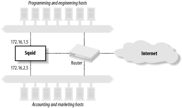

|
|
< Day Day Up > |
|
6.1 Access Control ElementsACL elements are the building blocks of Squid's access control implementation. These are how you specify things such as IP addresses, port numbers, hostnames, and URL patterns. Each ACL element has a name, which you refer to when writing the access list rules. The basic syntax of an ACL element is as follows: acl name type value1 value2 ... For example: acl Workstations src 10.0.0.0/16 In most cases, you can list multiple values for one ACL element. You can also have multiple acl lines with the same name. For example, the following two configurations are equivalent: acl Http_ports port 80 8000 8080 acl Http_ports port 80 acl Http_ports port 8000 acl Http_ports port 8080 6.1.1 A Few Base ACL TypesSquid has approximately 25 different ACL types, some of which have a common base type. For example, both src and dst ACLs use IP addresses as their base type. To avoid being redundant, I'll cover the base types first and then describe each type of ACL in the following sections. 6.1.1.1 IP addressesUsed by: src, dst, myip Squid has a powerful syntax for specifying IP addresses in ACLs. You can write addresses as subnets, address ranges, and domain names. Squid supports both "dotted quad" and CIDR prefix[1] subnet specifications. In addition, if you omit a netmask, Squid calculates the appropriate netmask for you. For example, each group in the next example are equivalent:
acl Foo src 172.16.44.21/255.255.255.255 acl Foo src 172.16.44.21/32 acl Foo src 172.16.44.21 acl Xyz src 172.16.55.32/255.255.255.248 acl Xyz src 172.16.55.32/28 acl Bar src 172.16.66.0/255.255.255.0 acl Bar src 172.16.66.0/24 acl Bar src 172.16.66.0 When you specify a netmask, Squid checks your work. If your netmask masks out non-zero bits of the IP address, Squid issues a warning. For example, the following lines results in the subsequent warning: acl Foo src 127.0.0.1/8 aclParseIpData: WARNING: Netmask masks away part of the specified IP in 'Foo' The problem here is that the /8 netmask (255.0.0.0) has all zeros in the last three octets, but the IP address 127.0.0.1 doesn't. Squid warns you about the problem so you can eliminate the ambiguity. To be correct, you should write: acl Foo src 127.0.0.1/32 or: acl Foo src 127.0.0.0/8 Sometimes you may need to list multiple, contiguous subnets. In these cases, it may be easier to specify an address range. For example: acl Bar src 172.16.10.0-172.16.19.0/24 This is equivalent to, and more efficient than, this approach: acl Foo src 172.16.10.0/24 acl Foo src 172.16.11.0/24 acl Foo src 172.16.12.0/24 acl Foo src 172.16.13.0/24 acl Foo src 172.16.14.0/24 acl Foo src 172.16.15.0/24 acl Foo src 172.16.16.0/24 acl Foo src 172.16.18.0/24 acl Foo src 172.16.19.0/24 Note that with IP address ranges, the netmask goes only at the very end. You can't specify different netmasks for the beginning and ending range values. You can also specify hostnames in IP ACLs. For example: acl Squid dst www.squid-cache.org
If the hostname resolves to multiple addresses, Squid adds each to the ACL. Also note that you can't use netmasks with hostnames. Using hostnames in address-based ACLs is usually a bad idea. Squid parses the configuration file before initializing other components, so these DNS lookups don't use Squid's nonblocking IP cache interface. Instead, they use the blocking gethostbyname( ) function. Thus, the need to convert ACL hostnames to addresses can delay Squid's startup procedure. Avoid using hostnames in src, dst, and myip ACLs unless absolutely necessary. Squid stores IP address ACLs in memory with a data structure known as an splay tree (see http://www.link.cs.cmu.edu/splay/). The splay tree has some interesting self-organizing properties, one of which being that the list automatically adjusts itself as lookups occur. When a matching element is found in the list, that element becomes the new root of the tree. In this way frequently referenced items migrate to the top of the tree, which reduces the time for future lookups. All subnets and ranges belonging to a single ACL element must not overlap. Squid warns you if you make a mistake. For example, this isn't allowed: acl Foo src 1.2.3.0/24 acl Foo src 1.2.3.4/32 It causes Squid to print a warning in cache.log: WARNING: '1.2.3.4' is a subnetwork of '1.2.3.0/255.255.255.0'
WARNING: because of this '1.2.3.4' is ignored to keep splay tree searching
predictable
WARNING: You should probably remove '1.2.3.4' from the ACL named 'Foo'
In this case, you need to fix the problem, either by removing one of the ACL values or by placing them into different ACL lists. 6.1.1.2 Domain namesUsed by: srcdomain, dstdomain, and the cache_host_domain directive A domain name is simply a DNS name or zone. For example, the following are all valid domain names: www.squid-cache.org squid-cache.org org Domain name ACLs are tricky because of a subtle difference relating to matching domain names and subdomains. When the ACL domain name begins with a period, Squid treats it as a wildcard, and it matches any hostname in that domain, even the domain name itself. If, on the other hand, the ACL domain name doesn't begin with a period, Squid uses exact string comparison, and the hostname must be exactly the same for a match. Table 6-1 shows Squid's rules for matching domain and hostnames. The first column shows hostnames taken from requested URLs (or client hostnames for srcdomain ACLs). The second column indicates whether or not the hostname matches lrrr.org. The third column shows whether the hostname matches an .lrrr.org ACL. As you can see, the only difference is in the second case.
Domain name matching can be confusing, so let's look at another example so that you really understand it. Here are two slightly different ACLs: acl A dstdomain foo.com acl B dstdomain .foo.com A user's request to get http://www.foo.com/ matches ACL B, but not A. ACL A requires an exact string match, but the leading dot in ACL B is like a wildcard. On the other hand, a user's request to get http://foo.com/ matches both ACLs A and B. Even though there is no word before foo.com in the URL hostname, the leading dot in ACL B still causes a match. Squid uses splay trees to store domain name ACLs, just as it does for IP addresses. However, Squid's domain name matching algorithm presents an interesting problem for splay trees. The splay tree technique requires that only one key can match any particular search term. For example, let's say the search term (from a URL) is i.am.lrrr.org. This hostname would be a match for both .lrrr.org and .am.lrrr.org. The fact that two ACL values match one hostname confuses the splay algorithm. In other words, it is a mistake to put something like this in your configuration file: acl Foo dstdomain .lrrr.org .am.lrrr.org If you do, Squid generates the following warning message: WARNING: '.am.lrrr.org' is a subdomain of '.lrrr.org' WARNING: because of this '.am.lrrr.org' is ignored to keep splay tree searching predictable WARNING: You should probably remove '.am.lrrr.org' from the ACL named 'Foo' You should follow Squid's advice in this case. Remove one of the related domains so that Squid does exactly what you intend. Note that you can use both domain names as long as you put them in different ACLs: acl Foo dstdomain .lrrr.org acl Bar dstdomain .am.lrrr.org This is allowed because each named ACL uses its own splay tree. 6.1.1.3 UsernamesUsed by: ident, proxy_auth ACLs of this type are designed to match usernames. Squid may learn a username through the RFC 1413 ident protocol or via HTTP authentication headers. Usernames must be matched exactly. For example, bob doesn't match bobby. Squid also has related ACLs (ident_regex and proxy_auth_regex) that use regular-expression pattern matching on usernames. You can use the word REQUIRED as a special value to match any username. If Squid can't determine the username, the ACL isn't matched. This is how Squid is usually configured when using username-based access controls. 6.1.1.4 Regular expressionsUsed by: srcdom_regex, dstdom_regex, url_regex, urlpath_regex, browser, referer_regex, ident_regex, proxy_auth_regex, req_mime_type, rep_mime_type A number of ACLs use regular expressions (regex) to match character strings. (For a complete regular-expression reference, see O'Reilly's Mastering Regular Expressions.) For Squid, the most commonly used regex features match the beginning and/or end of a string. For example, the ^ character is special because it matches the beginning of a line or string: ^http:// This regex matches any URL that begins with http://. The $ character is also special because it matches the end of a line or string: .jpg$ Actually, the previous example is slightly wrong because the . character is special too. It is a wildcard that matches any character. What we really want is this: \.jpg$ The backslash escapes the . so that its specialness is taken away. This regex matches any string that ends with .jpg. If you don't use the ^ or $ characters, regular expressions behave like standard substring searches. They match an occurrence of the word (or words) anywhere in the string. With all of Squid's regex types, you have the option to use case-insensitive comparison. Matching is case-sensitive by default. To make it case-insensitive, use the -i option after the ACL type. For example: acl Foo url_regex -i ^http://www 6.1.1.5 TCP port numbersUsed by: port, myport This type is relatively straightforward. The values are individual port numbers or port number ranges. Recall that TCP port numbers are 16-bit values and, therefore, must be greater than 0 and less than 65,536. Here are some examples: acl Foo port 123 acl Bar port 1-1024 6.1.1.6 Autonomous system numbersUsed by: src_as, dst_as Internet routers use Autonomous System (AS) numbers to construct routing tables. Essentially, an AS number refers to a collection of IP networks managed by a single organization. For example, my ISP has been assigned the following network blocks: 134.116.0.0/16, 137.41.0.0/16, 206.168.0.0/16, and many more. In the Internet routing tables, these networks are advertised as belonging to AS 3404. When routers forward packets, they typically select the path that traverses the fewest autonomous systems. If none of this makes sense to you, don't worry. AS-based ACLs should only be used by networking gurus. Here's how the AS-based types work: when Squid first starts up, it sends a special query to a whois server. The query essentially says, "Tell me which IP networks belong to this AS number." This information is collected and managed by the Routing Arbiter Database (RADB). Once Squid receives the list of IP networks, it treats them similarly to the IP address-based ACLs. AS-based types only work well when ISPs keep their RADB information up to date. Some ISPs are better than others about updating their RADB entries; many don't bother with it at all. Also note that Squid converts AS numbers to networks only at startup or when you signal it to reconfigure. If the ISP updates its RADB entry, your cache won't know about the changes until you restart or reconfigure Squid. Another problem is that the RADB server may be unreachable when your Squid process starts. If Squid can't contact the RADB server, it removes the AS entries from the access control configuration. The default server, whois.ra.net, may be too far away from many users to be reliable. 6.1.2 ACL TypesNow we can focus on the ACL types themselves. I present them here roughly in order of decreasing importance. 6.1.2.1 srcIP addresses are the most commonly used access control elements. Most sites use IP address controls to specify clients that are allowed to access Squid and those that aren't. The src type refers to client (source) IP addresses. That is, when an src ACL appears in an access list, Squid compares it to the IP address of the client issuing the request. Normally you want to allow requests from hosts inside your network and block all others. For example, if your organization is using the 192.168.0.0 subnet, you can use an ACL like this: acl MyNetwork src 192.168.0.0 If you have many subnets, you can list them all on the same acl line: acl MyNetwork src 192.168.0.0 10.0.1.0/24 10.0.5.0/24 172.16.0.0/12 Squid has a number of other ACL types that check the client's address. The srcdomain type compares the client's fully qualified domain name. It requires a reverse DNS lookup, which may add some delay to processing the request. The srcdom_regex ACL is similar, but it allows you to use a regular expression to compare domain names. Finally, the src_as type compares the client's AS number. 6.1.2.2 dstThe dst type refers to origin server (destination) IP addresses. Among other things, you can use this to prevent some or all of your users from visiting certain web sites. However, you need to be a little careful with the dst ACL. Most of the requests received by Squid have origin server hostnames. For example: GET http://www.web-cache.com/ HTTP/1.0 Here, www.web-cache.com is the hostname. When an access list rule includes a dst element, Squid must find the IP addresses for the hostname. If Squid's IP cache contains a valid entry for the hostname, the ACL is checked immediately. Otherwise, Squid postpones request processing while the DNS lookup is in progress. This can add significant delay to some requests. To avoid those delays, you should use the dstdomain ACL type (instead of dst) whenever possible.[2]
Here is a simple dst ACL example: acl AdServers dst 1.2.3.0/24 Note that one problem with dst ACLs is that the origin server you are trying to allow or deny may change its IP address. If you don't notice the change, you won't bother to update squid.conf. You can put a hostname on the acl line, but that adds some delay at startup. If you need many hostnames in ACLs, you may want to preprocess the configuration file and turn the hostnames into IP addresses. 6.1.2.3 myipThe myip type refers to the IP address where clients connect to Squid. This is what you see under the Local Address column when you run netstat -n on the Squid box. Most Squid installations don't use this type. Usually, all clients connect to the same IP address, so this ACL element is useful only on systems that have more than one IP address. To understand how myip may be useful, consider a simple company local area network with two subnets. All users on subnet-1 are programmers and engineers. Subnet-2 consists of accounting, marketing, and other administrative departments. The system on which Squid runs has three network interfaces: one on subnet-1, one on subnet-2, and the third connecting to the outbound Internet connection (see Figure 6-1). Figure 6-1. An application of the myip ACLWhen properly configured, all users on subnet-1 connect to Squid's IP address on that subnet, and similarly, all subnet-2 users connect to Squid's second IP address. You can use this to give the technical staff on subnet-1 full access, while limiting the administrative staff to only work-related web sites. The ACLs might look like this: acl Eng myip 172.16.1.5 acl Admin myip 172.16.2.5 Note, however, that with this scheme you must take special measures to prevent users on one subnet from connecting to Squid's address on the other subnet. Otherwise, clever users on the accounting and marketing subnet can connect through the programming and engineering subnet and bypass your restrictions. 6.1.2.4 dstdomainIn some cases, you're likely to find that name-based access controls make a lot of sense. You can use them to block access to certain sites, to control how Squid forwards requests and to make some responses uncachable. The dstdomain type is very useful because it checks the hostname in requested URLs. First, however, I want to clarify the difference between the following two lines: acl A dst www.squid-cache.org acl B dstdomain www.squid-cache.org A is really an IP address ACL. When Squid parses the configuration file, it looks up the IP address for www.squid-cache.org and stores the address in memory. It doesn't store the name. If the IP address for www.squid-cache.org changes while Squid is running, Squid continues using the old address. The dstdomain ACL, on the other hand, is stored as a domain name (i.e., a string), not as an IP address. When Squid checks ACL B, it uses string comparison functions on the hostname part of the URL. In this case, it doesn't really matter if the www.squid-cache.org IP changes while Squid is running. The primary problem with dstdomain ACLs is that some URLs have IP addresses instead of hostnames. If your goal is to block access to certain sites with dstdomain ACLs, savvy users can simply look up the site's IP address manually and insert it into the URL. For example, these two URLs bring up the same page: http://www.squid-cache.org/docs/FAQ/ http://206.168.0.9/docs/FAQ/ The first can be easily matched with dstdomain ACLs, but the second can't. Thus, if you elect to rely on dstdomain ACLs, you may want to also block all requests that use an IP address instead of a hostname. See the Section 6.3.8 for an example. 6.1.2.5 srcdomainThe srcdomain ACL is somewhat tricky as well. It requires a so-called reverse DNS lookup on each client's IP address. Technically, Squid requests a DNS PTR record for the address. The answer—a fully qualified domain name (FQDN)—is what Squid compares to the ACL value. (Refer to O'Reilly's DNS and BIND for more information about DNS PTR records.) As with dst ACLs, FQDN lookups are a potential source of significant delay. The request is postponed until the FQDN answer comes back. FQDN answers are cached, so the srcdomain lookup delay usually occurs only for the client's first request. Unfortunately, srcdomain lookups sometimes don't work. Many organizations fail to keep their reverse lookup databases current. If an address doesn't have a PTR record, the ACL check fails. In some cases, requests may be postponed for a very long time (e.g., two minutes) until the DNS lookup times out. If you choose to use the srcdomain ACL, make sure that your own DNS in-addr.arpa zones are properly configured and working. Assuming that they are, you can use an ACL like this: acl LocalHosts srcdomain .users.example.com 6.1.2.6 portMost likely, you'll want to use the port ACL to limit access to certain origin server port numbers. As I'll explain shortly, Squid really shouldn't connect to certain services, such as email and IRC servers. The port ACL allows you to define individual ports, and port ranges. Here is an example: acl HTTPports port 80 8000-8010 8080 HTTP is similar in design to other protocols, such as SMTP. This means that clever users can trick Squid into relaying email messages to an SMTP server. Email relays are one of the primary reasons we must deal with a daily deluge of spam. Historically, spam relays have been actual mail servers. Recently, however, more and more spammers are using open HTTP proxies to hide their tracks. You definitely don't want your Squid cache to be used as a spam relay. If it is, your IP address is likely to end up on one of the many mail-relay blacklists (MAPS, ORDB, spamhaus, etc.). In addition to email, there are a number of other TCP/IP services that Squid shouldn't normally communicate with. These include IRC, Telnet, DNS, POP, and NNTP. Your policy regarding port numbers should be either to deny the known-to-be-dangerous ports and allow the rest, or to allow the known-to-be-safe ports and deny the rest. My preference is to be conservative and allow only the safe ports. The default squid.conf includes the following Safe_ports ACL: acl Safe_ports port 80 # http acl Safe_ports port 21 # ftp acl Safe_ports port 443 563 # https, snews acl Safe_ports port 70 # gopher acl Safe_ports port 210 # wais acl Safe_ports port 1025-65535 # unregistered ports acl Safe_ports port 280 # http-mgmt acl Safe_ports port 488 # gss-http acl Safe_ports port 591 # filemaker acl Safe_ports port 777 # multiling http http_access deny !Safe_ports This is a sensible approach. It allows users to connect to any nonprivileged port (1025-65535), but only specific ports in the privileged range. If one of your users tries to request a URL, such as http://www.lrrr.org:123/, Squid returns an access denied error message. In some cases, you may need to add additional port numbers to the Safe_ports ACL to keep your users happy. A more liberal approach is to deny access to certain ports that are known to be particularly dangerous. The Squid FAQ includes an example of this: acl Dangerous_ports 7 9 19 22 23 25 53 109 110 119 http_access deny Dangerous_ports One drawback to the Dangerous_ports approach is that Squid ends up searching the entire list for almost every request. This places a little extra burden on your CPU. Most likely, 99% of the requests reaching Squid are for port 80, which doesn't appear in the Dangerous_ports list. The list is searched for all of these requests without resulting in a match. However, integer comparison is a fast operation and should not significantly impact performance. 6.1.2.7 myportSquid also has a myport ACL. Whereas the port ACL refers to the origin server port number, myport refers to the port where Squid receives client requests. Squid listens on different port numbers if you specify more than one with the http_port directive. The myport ACL is particularly useful if you use Squid as an HTTP accelerator for your web site and as a proxy for your users. You can accept the accelerator requests on port 80 and the proxy requests on port 3128. You probably want the world to access the accelerator, but only your users should access Squid as a proxy. Your ACLs may look something like this: acl AccelPort myport 80 acl ProxyPort myport 3128 acl MyNet src 172.16.0.0/22 http_access allow AccelPort # anyone http_access allow ProxyPort MyNet # only my users http_access deny ProxyPort # deny others 6.1.2.8 methodThe method ACL refers to the HTTP request method. GET is typically the most common method, followed by POST, PUT, and others. This example demonstrates how to use the method ACL: acl Uploads method PUT POST Squid knows about the following standard HTTP methods: GET, POST, PUT, HEAD, CONNECT, TRACE, OPTIONS, and DELETE. In addition, Squid knows about the following methods from the WEBDAV specification, RFC 2518: PROPFIND, PROPPATCH, MKCOL, COPY, MOVE, LOCK, UNLOCK.[3] Certain Microsoft products use nonstandard WEBDAV methods, so Squid knows about them as well: BMOVE, BDELETE, BPROPFIND. Finally, you can configure Squid to understand additional request methods with the extension_methods directive. See Appendix A.
Note that the CONNECT method is special in a number of ways. It is the method used for tunneling certain requests through HTTP proxies (see also RFC 2817: Upgrading to TLS Within HTTP/1.1). Be especially careful with the CONNECT method and remote server port numbers. As I talked about in the previous section, you don't want Squid to connect to certain remote services. You should limit the CONNECT method to only the HTTPS/SSL and perhaps NNTPS ports (443 and 563, respectively). The default squid.conf does this: acl CONNECT method CONNECT acl SSL_ports 443 563 http_access allow CONNECT SSL_ports http_access deny CONNECT With this configuration, Squid only allows tunneled requests to ports 443 (HTTPS/SSL) and 563 (NNTPS). CONNECT method requests to all other ports are denied. PURGE is another special request method. It is specific to Squid and not defined in any of the RFCs. It provides a way for the administrator to forcibly remove cached objects. Since this method is somewhat dangerous, Squid denies PURGE requests by default, unless you define an ACL that references the method. Otherwise, anyone with access to the cache may be able to remove any cached object. I recommend allowing PURGE from localhost only: acl Purge method PURGE acl Localhost src 127.0.0.1 http_access allow Purge Localhost http_access deny Purge See Section 7.6 for more information on removing objects from Squid's cache. 6.1.2.9 protoThis type refers to a URI's access (or transfer) protocol. Valid values are the following: http, https (same as HTTP/TLS), ftp, gopher, urn, whois, and cache_object. In other words, these are the URL scheme names (RFC 1738 terminology) supported by Squid. For example, suppose that you want to deny all FTP requests. You can use the following directives: acl FTP proto FTP http_access deny FTP The cache_object scheme is a feature specific to Squid. It is used to access Squid's cache management interface, which I'll talk about in Section 14.2. Unfortunately, it's not a very good name, and it should probably be changed. The default squid.conf file has a couple of lines that restrict cache manager access: acl Manager proto cache_object acl Localhost src 127.0.0.1 http_access allow Manager Localhost http_access deny Manager These configuration lines allow cache-manager requests only when they come from the localhost address. All other cache-manager requests are denied. This means that any user with an account on the Squid machine can access the potentially sensitive cache-manager information. You may want to modify the cache-manager access controls or protect certain pages with passwords. I'll talk about that in Section 14.2.2. 6.1.2.10 timeThe time ACL allows you to control access based on the time of day and the day of the week. The syntax is somewhat cryptic: acl name [days] [h1:m1-h2:m2] You can specify days of the week, starting and stopping times, or both. Days are specified by the single-letter codes shown in Table 6-2. Times are specified in 24-hour format. The starting time must be less than the ending time, which makes it awkward to write time ACLs that span "midnights."
To specify a time ACL that matches your weekday working hours, you can write: acl Working_hours MTWHF 08:00-17:00 or: acl Working_hours D 08:00-17:00 Let's look at a trickier example. Perhaps you're an ISP that relaxes access during off-peak hours, say 8 P.M. to 4 A.M. Since this time spans midnight, you can't write "20:00-04:00." Instead you'll need either to split this into two ACLs or define the peak hours and use negation. For example: acl Offpeak1 20:00-23:59 acl Offpeak2 00:00-04:00 http_access allow Offpeak1 ... http_access allow Offpeak2 ... Alternatively, you can do it like this: acl Peak 04:00-20:00 http_access allow !Peak ... Although Squid allows it, you probably shouldn't put more than one day list and time range on a single time ACL line. The parser isn't always smart enough to figure out what you want. For example, if you enter this: acl Blah time M 08:00-10:00 W 09:00-11:00 what you really end up with is this: acl Blah time MW 09:00-11:00 The parser ORs weekdays together and uses only the last time range. It does work, however, if you write it like this, on two separate lines: acl Blah time M 08:00-10:00 acl Blah time W 09:00-11:00 6.1.2.11 identThe ident ACL matches usernames returned by the ident protocol. This is a simple protocol, that's documented in RFC 1413. It works something like this:
When Squid encounters an ident ACL for a particular request, that request is postponed until the ident lookup is complete. Thus, the ident ACL may add some significant delays to your users' requests. We recommend using the ident ACL only on local area networks and only if all or most of the client workstations run the ident server. If Squid and the client workstations are connected to a LAN with low latency, the ident ACL can work well. Using ident for clients connecting over WAN links is likely to frustrate both you and your users. The ident protocol isn't very secure. Savvy users will be able to replace their normal ident server with a fake server that returns any username they select. For example, if I know that connections from the user administrator are always allowed, I can write a simple program that answers every ident request with that username.
Note that Squid also has a feature to perform "lazy" ident lookups on clients. In this case, requests aren't delayed while waiting for the ident query. Squid logs the ident information if it is available by the time the HTTP request is complete. You can enable this feature with the ident_lookup_access directive, which I'll discuss later in this chapter. 6.1.2.12 proxy_authSquid has a powerful, and somewhat confusing, set of features to support HTTP proxy authentication. With proxy authentication, the client's HTTP request includes a header containing authentication credentials. Usually, this is simply a username and password. Squid decodes the credential information and then queries an external authentication process to find out if the credentials are valid. Squid currently supports three techniques for receiving user credentials: the HTTP Basic protocol, Digest authentication protocol, and NTLM. Basic authentication has been around for a long time. By today's standards, it is a very insecure technique. Usernames and passwords are sent together, essentially in cleartext. Digest authentication is more secure, but also more complicated. Both Basic and Digest authentication are documented in RFC 2617. NTLM also has better security than Basic authentication. However, it is a proprietary protocol developed by Microsoft. A handful of Squid developers have essentially reverse-engineered it. In order to use proxy authentication, you must also configure Squid to spawn a number of external helper processes. The Squid source code includes some programs that authenticate against a number of standard databases, including LDAP, NTLM, NCSA-style password files, and the standard Unix password database. The auth_param directive controls the configuration of all helper programs. I'll go through it in detail in Chapter 12. The auth_param directive and proxy_auth ACL is one of the few cases where their order in the configuration file is important. You must define at least one authentication helper (with auth_param) before any proxy_auth ACLs. If you don't, Squid prints an error message and ignores the proxy_auth ACLs. This isn't a fatal error, so Squid may start anyway, and all your users' requests may be denied. The proxy_auth ACL takes usernames as values. However, most installations simply use the special value REQUIRED: auth_param ... acl Auth1 proxy_auth REQUIRED In this case, any request with valid credentials matches the ACL. If you need fine-grained control, you can specify individual usernames: auth_param ... acl Auth1 proxy_auth allan bob charlie acl Auth2 proxy_auth dave eric frank
6.1.2.13 src_asThis type checks that the client (source) IP address belongs to a specific AS number. (See Section 6.1.1.6 for information on how Squid maps AS numbers to IP addresses.) As an example, consider the fictitious ISP that uses AS 64222 and advertises the 10.0.0.0/8, 172.16.0.0/12, and 192.168.0.0/16 networks. You can write an ACL like this, which allows requests from any host in the ISP's address space: acl TheISP src 10.0.0.0/8 acl TheISP src 172.16.0.0/12 acl TheISP src 192.168.0.0/16 http_access allow TheISP Alternatively, you can write it like this: acl TheISP src_as 64222 http_access allow TheISP Not only is the second form shorter, it also means that if the ISP adds more networks, you won't have to update your ACL configuration. 6.1.2.14 dst_asThe dst_as ACL is often used with the cache_peer_access directive. In this way, Squid can forward cache misses in a manner consistent with IP routing. Consider an ISP that exchanges routes with a few other ISPs. Each ISP operates their own caching proxy, and these proxies can forward requests to each other. Ideally, ISP A forwards cache misses for servers on ISP B's network to ISP B's caching proxy. An easy way to do this is with AS ACLs and the cache_peer_access directive: acl ISP-B-AS dst_as 64222 acl ISP-C-AS dst_as 64333 cache_peer proxy.isp-b.net parent 3128 3130 cache_peer proxy.isp-c.net parent 3128 3130 cache_peer_access proxy.isb-b.net allow ISP-B-AS cache_peer_access proxy.isb-c.net allow ISP-C-AS These access controls make sure that the only requests sent to the two ISPs are for their own origin servers. I'll talk further about cache cooperation in Chapter 10. 6.1.2.15 snmp_communityThe snmp_community ACL is meaningful only for SNMP queries, which are controlled by the snmp_access directive. For example, you might write: acl OurCommunityName snmp_community hIgHsEcUrItY acl All src 0/0 snmp_access allow OurCommunityName snmp_access deny All In this case, an SNMP query is allowed only if the community name is set to hIgHsEcUrItY. 6.1.2.16 maxconnThe maxconn ACL refers to the number of simultaneous connections from a client's IP address. Some Squid administrators find this a useful way to prevent users from abusing the proxy or consuming too many resources. The maxconn ACL matches a request when that request exceeds the number you specify. For this reason, you should use maxconn ACLs only in deny rules. Consider this example: acl OverConnLimit maxconn 4 http_access deny OverConnLimit In this case, Squid allows up to four connections at once from each IP address. When a client makes the fifth connection, the OverConnLimit ACL is matched, and the http_access rule denies the request. The maxconn ACL feature relies on Squid's client database. This database keeps a small data structure in memory for each client IP address. If you have a lot of clients, this database may consume a significant amount of memory. You can disable the client database in the configuration file with the client_db directive. However, if you disable the client database, the maxconn ACL will no longer work. 6.1.2.17 arpThe arp ACL is used to check the Media Access Control (MAC) address (typically Ethernet) of cache clients. The Address Resolution Protocol (ARP) is the way that hosts find the MAC address corresponding to an IP address. This feature came about when some university students discovered that, under Microsoft Windows, they could set a system's IP address to any value. Thus, they were able to circumvent Squid's address-based controls. To escalate this arms race, a savvy system administrator gave Squid the ability to check the client's Ethernet addresses. Unfortunately, this feature uses nonportable code. If you use Solaris or Linux, you should be able to use arp ACLs. If not, you're out of luck. The best way to find out is to add the —enable-arp-acl option when you run ./configure. The arp ACL feature contains another important limitation. ARP is a datalink layer protocol. It works only for hosts on the same subnet as Squid. You can't easily discover the MAC address of a host on a different subnet. If you have routers between Squid and your users, you probably can't use arp ACLs. Now that you know when not to use them, let's see how arp ACLs actually look. The values are Ethernet addresses, as you would see in ifconfig and arp output. For example: acl WinBoxes arp 00:00:21:55:ed:22 acl WinBoxes arp 00:00:21:ff:55:38 6.1.2.18 srcdom_regexThe srcdom_regex ACL allows you to use regular expression matching on client domain names. This is similar to the srcdomain ACL, which uses modified substring matching. The same caveats apply here: some client addresses don't resolve back to domain names. As an example, the following ACL matches hostnames that begin with dhcp: acl DHCPUser srcdom_regex -i ^dhcp Because of the leading ^ symbol, this ACL matches the hostname dhcp12.example.com, but not host12.dhcp.example.com. 6.1.2.19 dstdom_regexThe dstdom_regex ACL is obviously similar, except that it applies to origin server names. The issues with dstdomain are relevant here, too. The following example matches hostnames that begin with www: acl WebSite dstdom_regex -i ^www\. Here is another useful regular expression that matches IP addresses given in URL hostnames: acl IPaddr dstdom_regex [0-9]$ This works because Squid requires URL hostnames to be fully qualified. Since none of the global top-level domains end with a digit, this ACL matches only IP addresses, which do end with a number. 6.1.2.20 url_regexYou can use the url_regex ACL to match any part of a requested URL, including the transfer protocol and origin server hostname. For example, this ACL matches MP3 files requested from FTP servers: acl FTPMP3 url_regex -i ^ftp://.*\.mp3$ 6.1.2.21 urlpath_regexThe urlpath_regex ACL is very similar to url_regex, except that the transfer protocol and hostname aren't included in the comparison. This makes certain types of checks much easier. For example, let's say you need to deny requests with sex in the URL, but still possibly allow requests that have sex in their hostname: acl Sex urlpath_regex sex As another example, let's say you want to provide special treatment for cgi-bin requests. You can catch some of them with this ACL: acl CGI1 urlpath_regex ^/cgi-bin Of course, CGI programs aren't necessarily kept under /cgi-bin/, so you'd probably want to write additional ACLs to catch the others. 6.1.2.22 browserMost HTTP requests include a User-Agent header. The value of this header is typically something strange like: Mozilla/4.51 [en] (X11; I; Linux 2.2.5-15 i686) The browser ACL performs regular expression matching on the value of the User-Agent header. For example, to deny requests that don't come from a Mozilla browser, you can use: acl Mozilla browser Mozilla http_access deny !Mozilla Before using the browser ACL, be sure that you fully understand the User-Agent strings your cache receives. Some user-agents lie about their identity. Even Squid has a feature to rewrite User-agent headers in requests that it forwards. With browsers such as Opera and KDE's Konqueror, users can send different user-agent strings to different origin servers or omit them altogether. 6.1.2.23 req_mime_typeThe req_mime_type ACL refers to the Content-Type header of the client's HTTP request. Content-Type headers usually appear only in requests with message bodies. POST and PUT requests might include the header, but GET requests don't. You might be able to use the req_mime_type ACL to detect certain file uploads and some types of HTTP tunneling requests. The req_mime_type ACL values are regular expressions. To catch audio file types, you can use an ACL like this: acl AuidoFileUploads req_mime_type -i ^audio/ 6.1.2.24 rep_mime_typeThe rep_mime_type ACL refers to the Content-Type header of the origin server's HTTP response. It is really only meaningful when used in an http_reply_access rule. All other access control forms are based on aspects of the client's request. This one is based on the response. If you want to try blocking Java code with Squid, you might use some access rules like this: acl JavaDownload rep_mime_type application/x-java http_reply_access deny JavaDownload 6.1.2.25 ident_regexYou saw the ident ACL earlier in this section. The ident_regex simply allows you to use regular expressions, instead of exact string matching on usernames returned by the ident protocol. For example, this ACL matches usernames that contain a digit: acl NumberInName ident_regex [0-9] 6.1.2.26 proxy_auth_regexAs with ident, the proxy_auth_regex ACL allows you to use regular expressions on proxy authentication usernames. For example, this ACL matches admin, administrator, and administrators: acl Admins proxy_auth_regex -i ^admin 6.1.3 External ACLsSquid Version 2.5 introduces a new feature: external ACLs. You instruct Squid to send certain pieces of information to an external process. This helper process then tells Squid whether the given data is a match or not. Squid comes with a number of external ACL helper programs; most determine whether or not the named user is a member of a particular group. See Section 12.5 for descriptions of those programs and for information on how to write your own. For now, I'll explain how to define and utilize an external ACL type. The external_acl_type directive defines a new external ACL type. Here's the general syntax: external_acl_type type-name [options] format helper-command type-name is a user-defined string. You'll also use it in an acl line to reference this particular helper. Squid currently supports the following options:
format is one or more keywords that begin with the % character. Squid currently supports the following format tokens:
helper-command is the command that Squid spawns for the helper. You may include command arguments here as well. For example, the entire command may be something like: /usr/local/squid/libexec/my-acl-prog.pl -X -5 /usr/local/squid/etc/datafile Putting all these together results in a long line. Squid's configuration file doesn't support the backslash line-continuation technique shown here, so remember that all these must go on a single line: external_acl_type MyAclType cache=100 %LOGIN %{User-Agent} \
/usr/local/squid/libexec/my-acl-prog.pl -X -5 \
/usr/local/squid/share/usernames \
/usr/local/squid/share/useragents
Now that you know how to define an external ACL, the next step is to write an acl line that references it. This is relatively straightforward. The syntax is as follows: acl acl-name external type-name [args ...] Here is a simple example: acl MyAcl external MyAclType Squid accepts any number of optional arguments following the type-name. These are sent to the helper program for each request, after the expanded tokens. See my description of the unix_group helper in Section 12.5.3 for an example of this feature. 6.1.4 Dealing with Long ACL ListsACL lists can sometimes be very long. Such lists are awkward to maintain inside the squid.conf file. Also, you may need to generate Squid ACL lists automatically from other sources. In these cases, you'll be happy to know that you can include ACL lists from external files. The syntax is as follows: acl name "filename" The double quotes here instruct Squid to open filename and assign its contents to the ACL. For example, instead of this: acl Foo BadClients 1.2.3.4 1.2.3.5 1.2.3.6 1.2.3.7 1.2.3.9 ... you can do this: acl Foo BadClients "/usr/local/squid/etc/BadClients" and put the IP addresses into the BadClients file: 1.2.3.4 1.2.3.5 1.2.3.6 1.2.3.7 1.2.3.9 ... Your file may include comments that begin with a # character. Note that each entry in the file must be on a separate line. Whereas a space character delimits values on an acl line, newlines are the delimiter for files containing ACL values. 6.1.5 How Squid Matches Access Control ElementsIt is important to understand how Squid searches ACL elements for a match. When an ACL element has more than one value, any single value can cause a match. In other words, Squid uses OR logic when checking ACL element values. Squid stops searching when it finds the first value that causes a match. This means that you can reduce delays by placing likely matches at the beginning of a list. Let's look at a specific example. Consider this ACL definition: acl Simpsons ident Maggie Lisa Bart Marge Homer When Squid encounters the Simpsons ACL in an access list, it performs the ident lookup. Let's see what happens when the user's ident server returns Marge. Squid's ACL code compares this value to Maggie, Lisa, and Bart before finding a match with Marge. At this point, the search terminates, and we say that the Simpsons ACL matches the request. Actually, that's a bit of a lie. The ident ACL values aren't stored as an unordered list. Rather, they are stored as an splay tree. This means that Squid doesn't end up searching all the names in the event of a nonmatch. Searching an splay tree with N items requires log(N) comparisons. Many other ACL types use splay trees as well. The regular expression-based types, however, don't. Since regular expressions can't be sorted, they are stored as linked lists. This makes them inefficient for large lists, especially for requests that don't match any of the regular expressions in the list. In an attempt to improve this situation, Squid moves a regular expression to the top of the list when a match occurs. In fact, due to the nature of the ACL matching code, Squid moves matched entries to the second position in the list. Thus, commonly matched values naturally migrate to the top of the ACL list, which should reduce the number of comparisons. Let's look at another simple example: acl Schmever port 80-90 101 103 107 1 2 3 9999 This ACL is a match for a request to an origin server port between 80 and 90, and all the other individual listed port numbers. For a request to port 80, Squid matches the ACL by looking at the first value. For port 9999, all the other values are checked first. For a port number not listed, Squid checks every value before declaring the ACL isn't a match. As I've said before, you can optimize the ACL matching by placing the more common values first. |
|
|
< Day Day Up > |
|